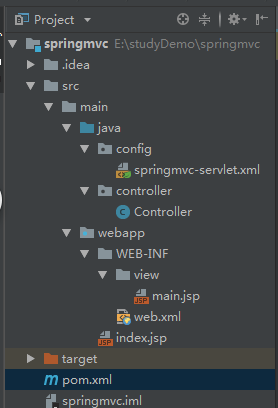

1.pom配置文件
<!-- build标签里添加，当xml配置文件不在web-inf下的时候可以将xml编译到目标文件中，否则可能报错 -->
<resources>
<resource>
<directory>src/main/java</directory>
<includes>
<include>**/*.xml</include>
</includes>
</resource>
</resources>
<!-- 添加springmvc依赖包 -->
<dependency>
<groupId>org.springframework</groupId>
<artifactId>spring-web</artifactId>
<version>4.1.2.RELEASE</version>
<scope>compile</scope>
</dependency>
<dependency>
<groupId>org.springframework</groupId>
<artifactId>spring-webmvc</artifactId>
<version>4.1.2.RELEASE</version>
<scope>compile</scope>
</dependency>
2.web.xml配置文件
<?xml version="1.0" encoding="UTF-8"?>
<servlet>
<servlet-name>spring</servlet-name>
<servlet-class>org.springframework.web.servlet.DispatcherServlet</servlet-class>
<init-param>
<param-name>contextConfigLocation</param-name>
<param-value>classpath:config/springmvc-servlet.xml</param-value>
</init-param>
<load-on-startup>1</load-on-startup>
</servlet>
<servlet-mapping>
<servlet-name>spring</servlet-name>
<url-pattern>/</url-pattern>
</servlet-mapping>
</web-app>
展示一下此次搭建项目中的的目录结构，注意配置文件springmvc-servlet.xml的位置

web.xml中配置springmvc配置文件加载不到的路径问题：
以IDEA创建springmvc项目为例，创建完编译后，java文件会在target文件下生成很多文件，其中项目名文件下的WEB-INF文件下的classes文件下会生成对应包里面类的的编译后的.class文件。
(1)对于target文件下的结构，如果springmvc等配置文件放在WEB-INF下，那么路径应该写成
<param-value>/WEB-INF/springmvc-servlet.xml</param-value>
(2)如果springmvc等配置文件放在java目录下的config包里，那么目录应该写成
<param-value>classpath:config/springmvc-servlet.xml</param-value>
或
<param-value>classpath*:config/springmvc-servlet.xml</param-value>
解释：
1.spring源码中设置classpath默认的访问地址为：WEB-INF/classes和WEB-INF/lib
2.classpath和classpath*的区别：classpath*表示告诉web容器去classpath（WEB-INF/classes和WEB-INF/lib）中去加载指定名称的配置文件，若是有同名文件则会全部加载。
例如classpath*：config/springContext.xml,那么spring会去WEB-INF/classes和WEB-INF/lib文件夹中逐层遍历，找到所有config/springContext.xml文件
参考博客：
3.springmvc-servlet.xml文件中配置：
<?xml version="1.0" encoding="UTF-8"?>
<!-- 配置扫描的包 -->
<context:component-scan base-package="controller"/>
<!-- 注册HandlerMapper、HandlerAdapter两个映射类 -->
<mvc:annotation-driven/>
<!-- 访问静态资源 -->
<mvc:default-servlet-handler/>
<!-- 视图解析器 -->
<bean
class="org.springframework.web.servlet.view.InternalResourceViewResolver">
<property name="prefix" value="/WEB-INF/view/"/>
<property name="suffix" value=".jsp"/>
</bean>
</beans>
不要轻易修改<beans >起始标签内的参数，这些参数可能和springmvc依赖的版本有关。不能随意的删除修改。
4.测试：
package controller;
import org.springframework.ui.Model;
import org.springframework.web.bind.annotation.RequestMapping;
@org.springframework.stereotype.Controller
@RequestMapping("cc")
public class Controller {
@RequestMapping("q")
public String qcc(Model model){
return "main";
}
}
通过请求路由，可以成功访问到main.jsp页面
tomcat配置：
tomcat中配置Deployment添加的是war exploded 不是war，war是发布模式，是先达成war包再部署，这样非常非常慢！已踩坑
而war exploded是直接移到tomcat进行部署，另外war exploded支持热部署，当然这需要另外设置
--------------------------------
开启热部署
配置参考博客：